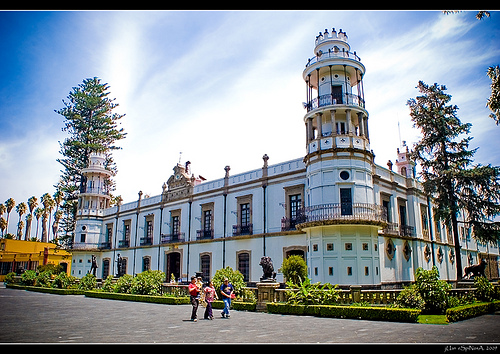
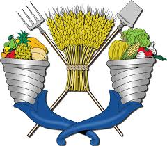
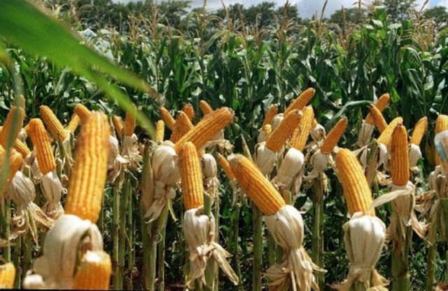

GUSTOS E INTERESES
Mi otro gusto es tocar el acordeon

CRISTAL NOLASCO VALERIO
ESPECIALIDAD :DAM
APLICACION:CARRERAS QUE ME GUSTARIAN ESTUDIAR
La Ingeniería Agroindustrial es la rama de la Ingeniería que basándose en las Ciencias de la Matemática, Ciencias Naturales como Física, Química, Biología, ciencias cruzadas como la Bioquímica, Biotecnología, Ciencias Económicas, Administrativas, y Ciencias de la Ingeniería, las aplica tanto a los procesos productivos como de gestión en la agroindustria, sean estas dedicadas a procesos tanto alimentarios como no alimentarios. Las diversas ramas de la agroindustria son: pesquera, agrícola, frutícola, ganadera, forestal, alimenticias en general. Dentro de está ingeniería, se encuentra la Ingeniería Civil Agroindustrial, que se diferencia del anterior por la fuerte instrucción teórica y práctica en las disciplinas antes mencionadas y en el ámbito gerencial, administrativo y económico. Dada su complejidad es considerada una ingeniería superior y en algunos países como Escandinavia se considera equivalente a un Master en Tecnología, por lo General su formación académica tiene una duración de seis años. El profesional que la ejerce se denomina Ingeniero Civil Agroindustrial.
La profesión de ingeniero petroquímico es de extrema relevancia hoy en día, gracias a que vivimos en una era industrializada y la economía de muchos países depende principalmente de la industria petrolera, por ello resulta necesaria la formación de profesionales expertos en área de la química e hidrocarburos. La petroquímica es lo que comprende a la industria que utiliza el petróleo o el gas natural como materias primas para la obtención de productos químicos, esto se refiere a la extracción de cualquier sustancia química o de combustibles fósiles. Estos incluyen combustibles fósiles purificados como el metano, el butano, el propano, la gasolina, el queroseno, el gasoil, el combustible de aviación, así como pesticidas, herbicidas, fertilizantes y otros artículos como los plásticos, el asfalto o las fibras sintéticas.
Misión Formar Ingenieros Agrónomos Especialistas en Suelos con alto nivel científico, tecnológico y ético en el manejo sustentable del Suelo, como componente del ambiente para el desarrollo de las plantas que los seres humanos aprovechan para satisfacer sus necesidades. Visión Ser líder con reconocimiento nacional e internacional en la formación de Ingenieros Agrónomos Especialistas en Suelos, capaces de generar y aplicar conocimiento en el manejo sustentable del suelo. De acuerdo a los antecedentes históricos, el Departamento de Suelos se inició como una Unidad de Investigación y Servicio en 1953 en la Escuela Nacional de Agricultura (ENA); un año después, en 1954, queda constituido el Departamento de Enseñanza e Investigación de Suelos, año de la conmemoración del centenario de la fundación de la ENA, siendo director el Ing. Humberto Ortega Cattaneo. El primer jefe del Departamento fue el Ing. Mariano Villegas Soto. El suelo es importante, ya que es uno de los principales componentes de los ecosistemas terrestres; transforma y almacena los nutrientes de las plantas; opera como amortiguador y filtro para los contaminantes, en muchas formas y en diferentes grados; es un eslabón clave y sistema amortiguador en el ciclo hidrológico mundial. Es fuente importante y lugar de ocurrencia de ciclos biogeoquímicos incluyendo al del bióxido de carbono, metano y óxido nitroso. El suelo influye en el intercambio de calor así como las características de reflexión de superficie de la tierra; como resultado de las interacciones de clima, material parental, relieve, hidrología, vegetación y tiempo; los suelos tienen algunos atributos relativamente estables, por lo tanto son un buen archivo de las condiciones climáticas y de la influencia humana pasadas. Las materias que integran la currícula de la especialidad de Suelos, contemplan todos los aspectos anteriores y están relacionadas con la evaluación, planeación, uso y manejo del recurso suelo. El objetivo de esta carrera es la de preparar individuos con capacidad de análisis que desarrollen, apliquen y transmitan técnicas para mejorar el aprovechamiento y conservación del recurso suelo como factor de la productividad agrícola, ganadera y forestal. El campo de acción del Especialista en Suelos es amplio y diverso; entre otras actividades, el egresado estará capacitado para: * Realizar diagnósticos nutrimentales y optimizar el uso de fertilizantes. * Realizar e interpretar análisis de suelos, aguas y plantas. * Diseñar y aplicar técnicas para la conservación y/o recuperación de suelos y aguas. * Elaborar y evaluar proyectos agropecuarios. * Clasificar y cartografiar suelos y evaluar tierras. * Participar en la enseñanza agrícola media y superior. * Dedicarse al ejercicio libre de la profesión creando bufetes de asesoría. * Participar en los programas agropecuarios nacionales y estatales. * Participar en la producción de cultivos y recomendación de insumos para la producción.
Formulación y evaluación de proyectos de inversión. Diseño, construcción y manejo de invernaderos. Producción de cultivos en hidroponía. Producción de hortalizas y flores en acolchados y microtúneles. Inocuidad alimentaría. Curso Internacional de Sistemas de Riego. Curso Internacional de Agroforestería para el desarrollo. Diagnostico y control de la degradación ambiental. Arboricultura urbana Evaluación de programas y políticas agrícolas. Alternativas para pequeños productores de leche.
Inocuidad alimentaría. Curso Internacional de Sistemas de Riego. Curso Internacional de Agroforestería para el desarrollo. Diagnostico y control de la degradación ambiental. Arboricultura urbana Evaluación de programas y políticas agrícolas. Alternativas para pequeños productores de leche.
Optimización del sistema cuantitativo para los negocios y toma de decisiones Dirección de empresas Exportación de productos. Liderazgo. Planeación estratégica. Técnicas y herramientas estadísticas para la calidad. Elaboración de programas de desarrollo rural regional. Proyectos de comercio internacional
Desarrollo de agronegocios. Cafeticultura. Citricultura. Fruticultura tropical. Fruticultura de clima templado. Desarrollo sustentable y nueva ruralidad. Educación ambiental.
Formulación y evaluación de proyectos de inversión. Políticas e instrumentos para el sector agropecuario y desarrollo rural. Recursos naturales y tecnología. Agroforestería. Riego presurizado y fertirrigación. Desarrollo rural sostenible Gestión agroempresarial.
